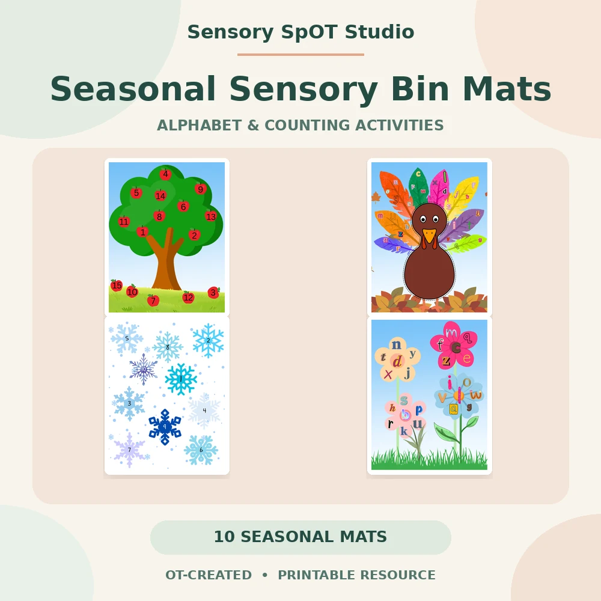
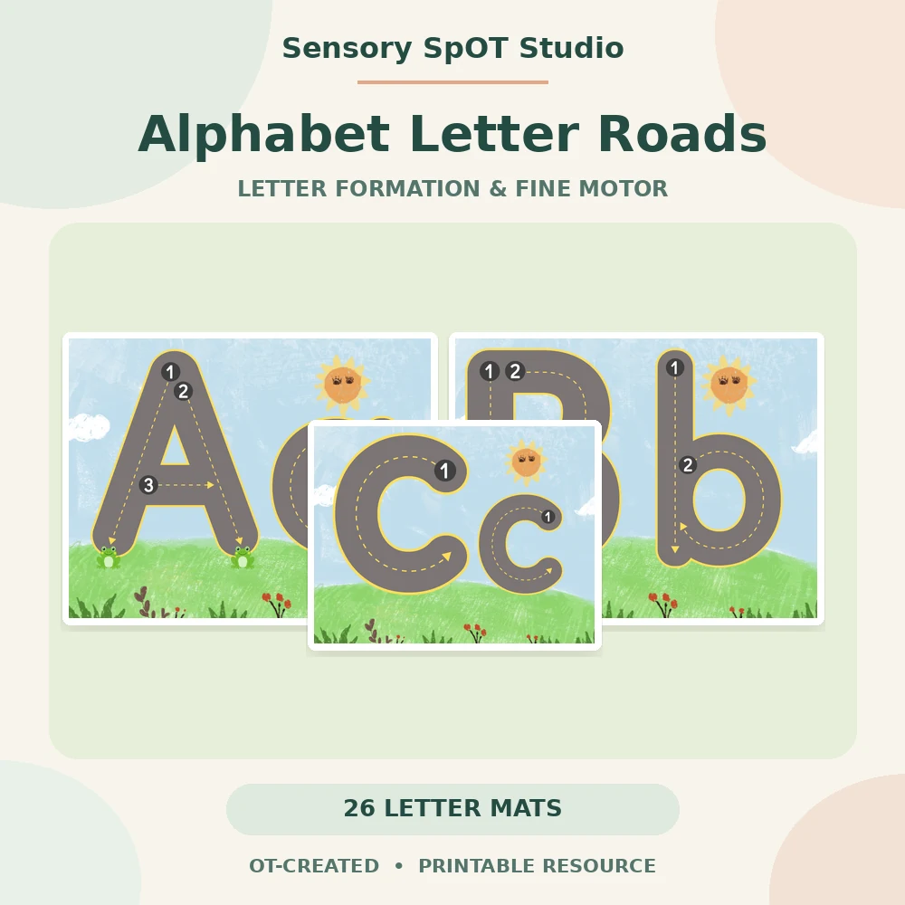
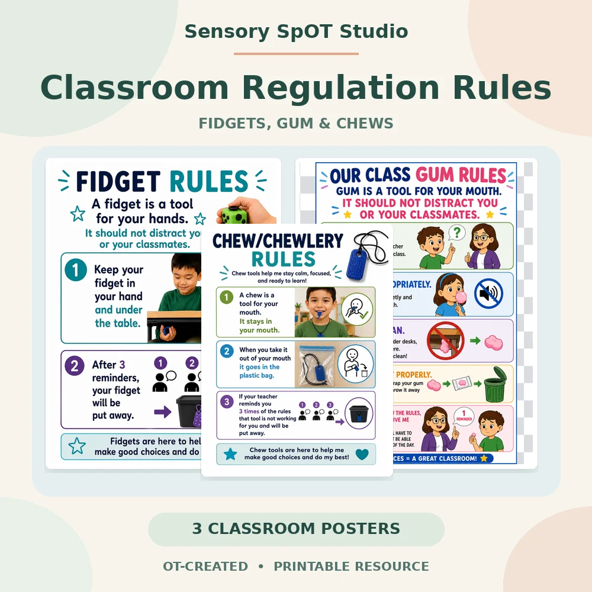

Sensory Bin Activities
Seasonal alphabet and counting mats that pair sensory play with visual scanning, early learning, and fine motor practice.
Explore sensory bin activitiesPurposeful Play. Growing Skills.
Discover practical, hands-on activities created by an experienced pediatric occupational therapist. Explore printable sensory bin activities, fine motor resources, handwriting readiness tools, and classroom movement activities for educators, therapists, and families.
Use these resources in classrooms, therapy sessions, learning centers, or at home. Clear directions and flexible formats make it easier to adapt activities to the people and routines in front of you.
Learn about four focused resource areas, then browse the current curated selection.
Seasonal alphabet and counting mats that pair sensory play with visual scanning, early learning, and fine motor practice.
Explore sensory bin activitiesLetter roads, handwriting reminders, and practical tools for prewriting and written work.
Browse curated resourcesActive seasonal activities for movement breaks, motor planning, body awareness, balance, and coordination.
Browse curated resourcesClear visuals and expectations for using regulation tools thoughtfully in shared learning spaces.
Browse curated resourcesA small selection of practical resources for classrooms, therapy sessions, and home learning.

Ten seasonal letter and number mats with a quick teacher guide for sensory play, centers, small groups, and occupational therapy sessions.
Skills: letter recognition, number recognition, counting, visual scanning, fine motor practice
View on Teachers Pay Teachers
Uppercase and lowercase letter paths designed for tracing with fingers or toy cars before transitioning to pencil practice.
Skills: letter recognition, prewriting, visual-motor coordination, letter formation
View on Teachers Pay Teachers
A clear classroom visual for teaching expectations around tools used to support attention and regulation.
Skills: classroom routines, tool expectations, self-advocacy, regulation supports
View on Teachers Pay TeachersSensory SpOT Studio draws on experience in outpatient pediatric clinics and school-based occupational therapy, graduate training at the University of New Hampshire, specialized interest and coursework in sensory processing, and participation in the interdisciplinary LEND program.
Each resource is designed to be practical, welcoming, and realistic for the adults supporting children across everyday learning environments.
Learn About the CreatorStart with practical guidance, then connect to related printables when they fit your setting.
Use sensory bins for letter recognition, counting, visual scanning, sorting, and fine motor practice.
Read the sensory bin guideBuild letter recognition and visual-motor practice with fingers, toy cars, and guided letter paths.
Read the letter roads guidePlan seasonal movement breaks with body awareness, motor planning, balance, and coordination in mind.
Read the movement guide